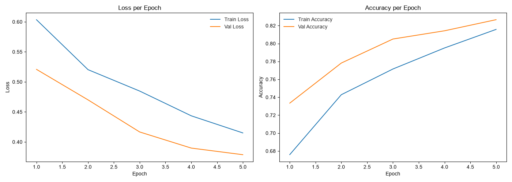
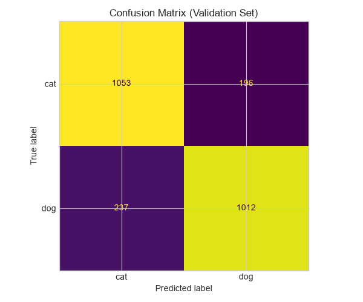

Pipeline Overview
1Download
Kaggle dataset
~25k images
Kaggle dataset
~25k images
→
2Preprocess
224×224, split
80 / 10 / 10
224×224, split
80 / 10 / 10
→
3Train
SimpleCNN
5 epochs
SimpleCNN
5 epochs
→
4Track
MLflow
experiments
MLflow
experiments
→
5API
FastAPI
/predict
FastAPI
/predict
→
6Docker
ghcr.io
multi-arch
ghcr.io
multi-arch
→
7CI/CD
GitHub Actions
test + deploy
GitHub Actions
test + deploy
→
8Monitor
Prometheus
+ Grafana
Prometheus
+ Grafana
Model
| Architecture | SimpleCNN (custom PyTorch) |
| Epochs | 5 |
| Optimizer | Adam (lr=0.001) |
| Validation accuracy | ~82.7% |
| Post-deploy accuracy | 86.0% (50 images) |
| Avg inference latency | ~14 ms |
Infrastructure
| Container registry | ghcr.io (linux/amd64 + arm64) |
| CI runner | GitHub Actions ubuntu-latest |
| Deployment | Docker Compose + Kubernetes |
| Prometheus scrape interval | 15s |
| Grafana | v11.1.0, 4-panel dashboard |
| Docker image size | 448.8 MB (python:3.12-slim) |
Quick Start
git clone https://github.com/sampathshetty85/cats-dogs-mlops
cd cats-dogs-mlops
docker compose up -d
# Health check
curl http://localhost:8000/health
# Predict
curl -F "file=@tests/fixtures/sample_cat.jpg" http://localhost:8000/predict
# Grafana dashboard
open http://localhost:3000 # login: admin / adminAPI Endpoints
GET
/health
Returns {"status":"ok","model":"SimpleCNN"}
POST
/predict
Multipart image → {"label":"cat","probability":0.87,"inference_time_ms":14.2}
GET
/metrics
Prometheus metrics: request rate, latency histogram, prediction counts
Training Results


CI/CD
Every push to main triggers the CI workflow: lint (flake8) → unit tests (7 tests) →
Docker build (multi-arch) → push to ghcr.io. On a successful push, the CD workflow pulls the new
image, starts the stack, and runs the smoke test against /health and /predict.